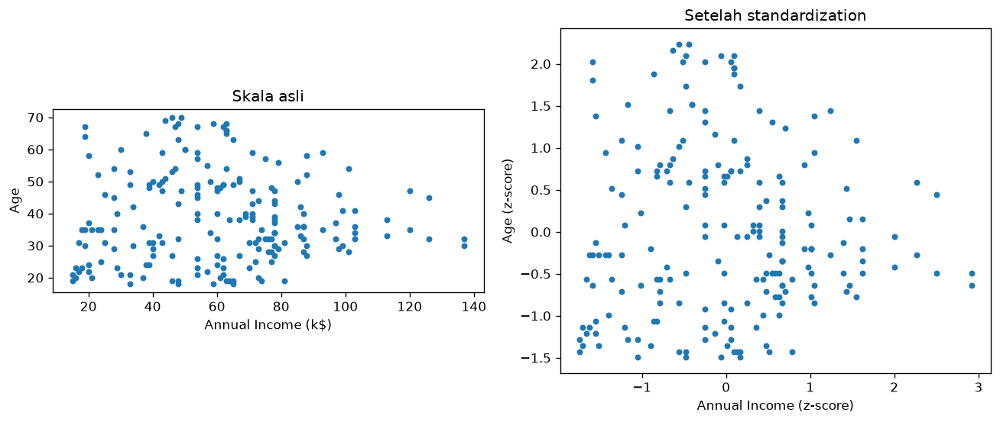

Bab 10 — Feature Scaling¶
Learning Objectives¶
Setelah mempelajari bab ini, kamu mampu:
- Menjelaskan mengapa kolom dengan rentang besar bisa mendominasi perhitungan jarak.
- Menerapkan Min-Max scaling dan Standardization (z-score), baik dengan rumus maupun dengan scikit-learn.
- Membedakan kapan memakai masing-masing.
- Memeriksa bahwa hasil penskalaan benar.
- Menjelaskan hubungan penskalaan dengan clustering berbasis jarak.
Introduction¶
Dari Bab 3, kita tahu rentang tiga kolom kita sangat berbeda: usia 18–70, pendapatan 15–137, skor belanja 1–99. Algoritma seperti K-Means mengukur jarak antar pelanggan. Kolom dengan angka besar menyumbang lebih banyak pada jarak, bukan karena lebih penting, tetapi karena satuannya lebih besar.
Bayangkan menghitung jarak dengan mencampur meter dan milimeter. Selisih 1 meter dan selisih 1 milimeter dihitung sebagai "1", padahal 1.000 kali berbeda. Feature scaling menyamakan "satuan" semua kolom agar adil.
Fundamental Concepts¶
| Teknik | Hasil | Cocok untuk |
|---|---|---|
| Min-Max scaling | Semua nilai masuk rentang 0 sampai 1 | Saat ingin rentang tetap dan terbatas |
| Standardization (z-score) | Rata-rata 0, simpangan baku 1 | Pilihan umum untuk clustering berbasis jarak |
| Robust scaling | Memakai median dan IQR | Saat ada banyak outlier. (Hanya disebut di sini, tidak dipraktikkan) |
Mengapa penting untuk clustering¶
Jarak Euclidean antara dua titik \(a\) dan \(b\) dengan tiga fitur:
Selisih yang besar (karena satuannya besar) membesarkan kuadratnya, sehingga fitur itu menguasai \(d\).
Detailed Explanation¶
Min-Max: menekan ke rentang 0–1¶
Nilai terkecil menjadi 0, terbesar menjadi 1, dan nilai lain berada di antaranya secara proporsional.
- Kelebihan: hasilnya mudah dibayangkan, dan rentangnya pasti.
- Kekurangan: sangat dipengaruhi outlier. Satu nilai ekstrem menentukan batas atas dan menekan semua nilai lain mendekati 0.
Standardization: berpusat di 0¶
Nilai dinyatakan sebagai berapa simpangan baku dari rata-rata. Nilai 0 berarti tepat di rata-rata, +1 berarti satu simpangan baku di atas.
- Kelebihan: tidak membatasi rentang, dan lebih tahan pada outlier dibanding Min-Max.
- Kekurangan: nilainya tidak berada di rentang tetap.
Mana yang dipakai?¶
Tidak ada jawaban tunggal. Untuk clustering berbasis jarak seperti K-Means, standardization adalah titik awal yang umum. Min-Max juga wajar. Yang penting: semua kolom diskalakan dengan cara yang sama, dan kamu tahu alasannya.
Kolom hasil one-hot
Kolom 0/1 hasil one-hot encoding (Bab 9) sudah berada di rentang 0–1. Apakah perlu diskalakan lagi tergantung strategi. Dibahas saat menyusun dataset final (Bab 12).
Mathematical Foundation¶
Min-Max scaling:
Standardization (z-score):
dengan \(\mu\) rata-rata dan \(\sigma\) simpangan baku kolom.
Dua versi simpangan baku
Scikit-learn (StandardScaler) memakai pembagi \(n\) (populasi), sedangkan df.std() pandas memakai \(n-1\) (sampel). Itu sebabnya, pada hitungan manual kita menulis std(ddof=0) supaya sama dengan scikit-learn. Selisihnya sangat kecil untuk data sebesar ini.
Python Implementation¶
Kita kerjakan dalam enam langkah kecil. Setiap potongan kode diikuti penjelasannya. Skrip lengkapnya ada di examples/level-2/10_feature_scaling.py, dan versi notebook-nya di notebooks/level-2/10-feature-scaling.ipynb.
Langkah 1 — Siapkan alat dan muat data¶
import pandas as pd
import matplotlib.pyplot as plt
pd.set_option("display.width", 120)
pd.set_option("display.max_columns", None)
DATA_PATH = "data/mall_customers.csv"
df = pd.read_csv(DATA_PATH)
fitur = ["Age", "Annual Income (k$)", "Spending Score (1-100)"]
X = df[fitur]
Penjelasan:
- Kita memanggil pandas dan matplotlib, lalu membaca data ke
df. fituradalah tiga kolom yang akan diskalakan.CustomerIDtidak ikut karena hanya nomor urut.X = df[fitur]adalah tabel yang berisi hanya tiga kolom itu. Mulai sekarang, kita bekerja denganX.
Langkah 2 — Masalah: rentang dan varians berbeda¶
print("Rentang tiap fitur:")
print(X.agg(["min", "max"]))
varians = X.var()
print("\nVarians tiap fitur:")
print(varians.round(1))
print("\nPorsi varians (persen) pada skala asli:")
print((varians / varians.sum() * 100).round(1))
Penjelasan:
X.agg(["min", "max"])menampilkan nilai terkecil dan terbesar tiap kolom.X.var()menghitung varians (kuadrat simpangan baku). Varians mengukur seberapa menyebar sebuah kolom, dan sangat menentukan sumbangan kolom itu pada jarak antar titik.varians / varians.sum() * 100menghitung porsi tiap kolom dari total varians, dalam persen.- Kalau porsi tiap kolom jauh berbeda, jarak akan didominasi kolom dengan porsi terbesar.
Langkah 3 — Min-Max scaling¶
X_minmax = (X - X.min()) / (X.max() - X.min())
print("Min-Max scaling (5 baris pertama):")
print(X_minmax.head().round(3))
print("\nMin dan max setiap kolom:")
print(X_minmax.agg(["min", "max"]))
Penjelasan:
(X - X.min()) / (X.max() - X.min())adalah rumus Min-Max, diterapkan pada semua kolom sekaligus.X.min()menghasilkan nilai terkecil per kolom, jadi pandas otomatis mengurangi tiap kolom dengan nilai minimumnya sendiri.head().round(3)menampilkan 5 baris pertama dengan tiga angka di belakang koma.agg(["min", "max"])membuktikan bahwa setiap kolom sekarang berada tepat di antara 0 dan 1.
Langkah 4 — Standardization¶
X_standar = (X - X.mean()) / X.std(ddof=0)
print("Standardization (5 baris pertama):")
print(X_standar.head().round(3))
print("\nRata-rata dan simpangan baku setiap kolom:")
print(X_standar.agg(["mean", "std"]).round(3))
Penjelasan:
(X - X.mean()) / X.std(ddof=0)adalah rumus z-score.ddof=0memakai pembagi \(n\), sama dengan scikit-learn.- Kita memeriksa rata-rata dan simpangan baku hasilnya. Rata-ratanya hampir 0 (
-0.000karena pembulatan, bukan negatif sungguhan), dan simpangan baku 1,003. - Angka 1,003, bukan tepat 1, muncul karena
agg(["std"])memakai pembagi \(n-1\), sedangkan kita menskalakan dengan pembagi \(n\). Itu hanya beda definisi, bukan kesalahan.
Langkah 5 — Hasil yang sama dengan scikit-learn¶
from sklearn.preprocessing import MinMaxScaler, StandardScaler
X_minmax_sk = MinMaxScaler().fit_transform(X)
X_standar_sk = StandardScaler().fit_transform(X)
print("Min-Max sama dengan hitungan manual?",
abs(X_minmax_sk - X_minmax.to_numpy()).max() < 1e-9)
print("Standardization sama dengan hitungan manual?",
abs(X_standar_sk - X_standar.to_numpy()).max() < 1e-9)
Penjelasan:
MinMaxScaler()danStandardScaler()adalah alat siap pakai dari scikit-learn untuk dua rumus tadi.fit_transform(X)melakukan dua hal sekaligus: belajar parameter (min/max atau mean/std) lalu menerapkannya.- Hasilnya berupa larik NumPy, bukan tabel pandas. Karena itu kita bandingkan dengan
.to_numpy(). abs(a - b).max() < 1e-9memeriksa bahwa selisih terbesarnya hampir nol (lebih kecil dari satu per miliar). JikaTrue, hitungan manual kita sama dengan scikit-learn.
Langkah 6 — Porsi varians setelah penskalaan, dan grafiknya¶
for nama, data in [("Min-Max", X_minmax), ("Standardization", X_standar)]:
v = data.var()
print(f"Porsi varians (persen) setelah {nama}:")
print((v / v.sum() * 100).round(1))
print()
Penjelasan:
- Kita ulangi perhitungan porsi varians pada data yang sudah diskalakan, untuk kedua metode.
- Loop
for nama, data in [...]mengulang pekerjaan yang sama untuk dua tabel. print()kosong hanya membuat baris kosong.
fig, axes = plt.subplots(1, 2, figsize=(11, 4.5))
axes[0].scatter(X["Annual Income (k$)"], X["Age"], s=14)
axes[0].set_title("Skala asli")
axes[0].set_xlabel("Annual Income (k$)")
axes[0].set_ylabel("Age")
axes[0].set_aspect("equal")
axes[1].scatter(X_standar["Annual Income (k$)"], X_standar["Age"], s=14)
axes[1].set_title("Setelah standardization")
axes[1].set_xlabel("Annual Income (z-score)")
axes[1].set_ylabel("Age (z-score)")
axes[1].set_aspect("equal")
fig.tight_layout()
plt.show()
Penjelasan:
- Dua scatter plot berdampingan: usia vs pendapatan pada skala asli (kiri) dan setelah standardization (kanan).
set_aspect("equal")membuat satu satuan di sumbu x sama panjang dengan satu satuan di sumbu y, sehingga kita melihat jarak yang sesungguhnya dihitung algoritma.
Code Explanation¶
Ringkasan fungsi baru di bab ini:
| Perintah | Kegunaan |
|---|---|
X.var() |
Varians tiap kolom |
X.std(ddof=0) |
Simpangan baku dengan pembagi \(n\) |
MinMaxScaler().fit_transform(X) |
Min-Max scaling dengan scikit-learn |
StandardScaler().fit_transform(X) |
Standardization dengan scikit-learn |
.to_numpy() |
Mengubah tabel pandas menjadi larik NumPy |
ax.set_aspect("equal") |
Skala sumbu x dan y sama |
How to Run¶
Jalankan dari folder utama proyek:
Skrip menyimpan satu gambar di docs/assets/level-2/. Untuk notebook:
Expected Output¶
Output berikut berasal dari eksekusi nyata skrip di atas (pandas 3.1.1, scikit-learn 1.9.1, Python 3.14.7):
Rentang tiap fitur:
Age Annual Income (k$) Spending Score (1-100)
min 18 15 1
max 70 137 99
Varians tiap fitur:
Age 195.1
Annual Income (k$) 689.8
Spending Score (1-100) 666.9
dtype: float64
Porsi varians (persen) pada skala asli:
Age 12.6
Annual Income (k$) 44.5
Spending Score (1-100) 43.0
dtype: float64
Min-Max scaling (5 baris pertama):
Age Annual Income (k$) Spending Score (1-100)
0 0.019 0.000 0.388
1 0.058 0.000 0.816
2 0.038 0.008 0.051
3 0.096 0.008 0.776
4 0.250 0.016 0.398
Min dan max setiap kolom:
Age Annual Income (k$) Spending Score (1-100)
min 0.0 0.0 0.0
max 1.0 1.0 1.0
Standardization (5 baris pertama):
Age Annual Income (k$) Spending Score (1-100)
0 -1.425 -1.739 -0.435
1 -1.281 -1.739 1.196
2 -1.353 -1.701 -1.716
3 -1.138 -1.701 1.040
4 -0.563 -1.663 -0.396
Rata-rata dan simpangan baku setiap kolom:
Age Annual Income (k$) Spending Score (1-100)
mean -0.000 -0.000 -0.000
std 1.003 1.003 1.003
Min-Max sama dengan hitungan manual? True
Standardization sama dengan hitungan manual? True
Porsi varians (persen) setelah Min-Max:
Age 38.4
Annual Income (k$) 24.7
Spending Score (1-100) 36.9
dtype: float64
Porsi varians (persen) setelah Standardization:
Age 33.3
Annual Income (k$) 33.3
Spending Score (1-100) 33.3
dtype: float64
[gambar disimpan: docs/assets/level-2/10-scaling-scatter.png]

Cara membaca output:
- Sebelum penskalaan, porsi varians:
Age12,6%,Annual Income (k$)44,5%,Spending Score (1-100)43,0%. Usia hanya berperan seperempat dari pendapatan atau skor belanja dalam jarak. - Min-Max: semua kolom tepat 0 sampai 1. Porsi varians menjadi 38,4%, 24,7%, dan 36,9%.
- Standardization: rata-rata 0 dan porsi varians 33,3% untuk ketiga kolom: perlakuannya adil.
- Scikit-learn memberi hasil yang sama dengan hitungan manual (
Trueuntuk keduanya). - Grafik kiri (skala asli, sumbu sama panjang): titik-titik tersebar sangat lebar secara horizontal, tetapi tampak "gepeng" secara vertikal. Pada grafik kanan setelah standardization, sebarannya setara di kedua arah.
Practical Examples¶
Mengapa Min-Max tidak menghasilkan porsi yang sama? Porsi varians setelah Min-Max (38,4%, 24,7%, 36,9%) tidak merata karena Min-Max hanya menyamakan rentang, bukan sebaran. Rentang pendapatan (15–137) diperlebar oleh nilai-nilai terbesar di ujung atas, sedangkan sebagian besar nilainya tidak menyebar selebar itu. Akibatnya variansnya setelah di-Min-Max menjadi yang terkecil. Standardization menyamakan sebaran, sehingga porsinya persis sama.
Pilihan untuk dataset ini. Karena kita ingin ketiga fitur berperan setara dan data hanya punya 2 titik yang melewati batas outlier IQR (Bab 7), standardization adalah pilihan yang wajar dan akan dipakai di Bab 12.
Skala dan interpretasi. Setelah penskalaan, nilai tidak lagi dalam satuan asli. Untuk menjelaskan hasil clustering kepada orang lain ("kelompok ini berpendapatan rata-rata berapa?"), kita kembalikan ke satuan asli, misalnya dengan menghitung statistik pada data asli per kelompok.
Skala memengaruhi hasil clustering
Hasil K-Means pada data yang diskalakan dan yang tidak diskalakan bisa berbeda. Itu bukan kesalahan, melainkan akibat dari definisi jarak yang berbeda. Karena itu, keputusan penskalaan harus disadari dan dicatat.
Hands-on Exercises¶
- Terapkan
RobustScalerdarisklearn.preprocessingpadaX. Apa bedanya denganStandardScaler? (petunjuk: baca dokumentasinya) - Tambahkan kolom
Gender_Male(0/1) keX, lalu hitung porsi variansnya sebelum penskalaan. Berapa persen? - Mengapa Min-Max sensitif terhadap outlier?
- Setelah standardization, berapa nilai rata-rata tiap kolom? Mengapa tampil
-0.000? - Hitung z-score untuk usia 40 dengan rata-rata 38,85 dan simpangan baku 13,97 (dari Bab 3).
Jawaban
RobustScalermemakai median dan IQR, bukan mean dan simpangan baku, sehingga lebih tahan terhadap outlier.- Jalankan
X.assign(Gender_Male=(df["Gender"] == "Male").astype(int)).var()lalu hitung porsinya. Karena kolom 0/1 hanya punya selisih maksimum 1, variansnya sangat kecil dibanding tiga kolom lain, sehingga porsinya mendekati nol pada skala asli. - Karena Min-Max menentukan batas dari nilai minimum dan maksimum. Satu nilai ekstrem menggeser batas itu, dan semua nilai lain tertekan ke bagian kecil dari rentang 0–1.
- Rata-ratanya hampir 0 (jauh lebih kecil dari 0,001). Tanda minus muncul karena sisa pembulatan angka desimal komputer, bukan karena nilainya benar-benar negatif.
- \(z = (40 - 38{,}85) / 13{,}97 \approx 0{,}08\). Usia 40 hanya sedikit di atas rata-rata.
Troubleshooting¶
| Masalah | Penyebab | Solusi |
|---|---|---|
| Hasil scikit-learn berupa larik tanpa nama kolom | Scikit-learn mengembalikan NumPy | Bungkus kembali: pd.DataFrame(hasil, columns=fitur) |
ValueError: could not convert string to float |
Ada kolom teks di data yang diskalakan | Pilih hanya kolom angka, atau encode dulu (Bab 9) |
ValueError: Input contains NaN |
Masih ada nilai kosong | Tangani dulu (Bab 5) |
Kolom hasil semuanya NaN |
Kolom konstan, sehingga pembagi 0 | Buang kolom yang nilainya sama semua |
| Hitungan manual sedikit berbeda dari scikit-learn | Beda pembagi (\(n\) vs \(n-1\)) | Pakai std(ddof=0) |
Summary¶
- Algoritma berbasis jarak sensitif terhadap satuan. Kolom dengan rentang atau sebaran besar bisa mendominasi.
- Min-Max menekan nilai ke 0–1. Standardization membuat rata-rata 0 dan simpangan baku 1.
- Pada Mall Customers, sebelum penskalaan porsi varians
Agehanya 12,6%. Setelah standardization, ketiga kolom 33,3%. - Min-Max sensitif terhadap outlier. Standardization lebih tahan, dan menjadi pilihan umum untuk clustering.
- Scikit-learn memberi hasil yang sama dengan rumus manual. Catat metode penskalaan yang kamu pakai.
References¶
- scikit-learn documentation: Preprocessing data, termasuk
MinMaxScaler,StandardScaler, danRobustScaler. - Han, J., Kamber, M., & Pei, J. (2011). Data Mining: Concepts and Techniques (3rd ed.), bab tentang normalisasi data. Morgan Kaufmann.
- Jain, A. K. (2010). Data clustering: 50 years beyond K-means. Pattern Recognition Letters, 31(8).